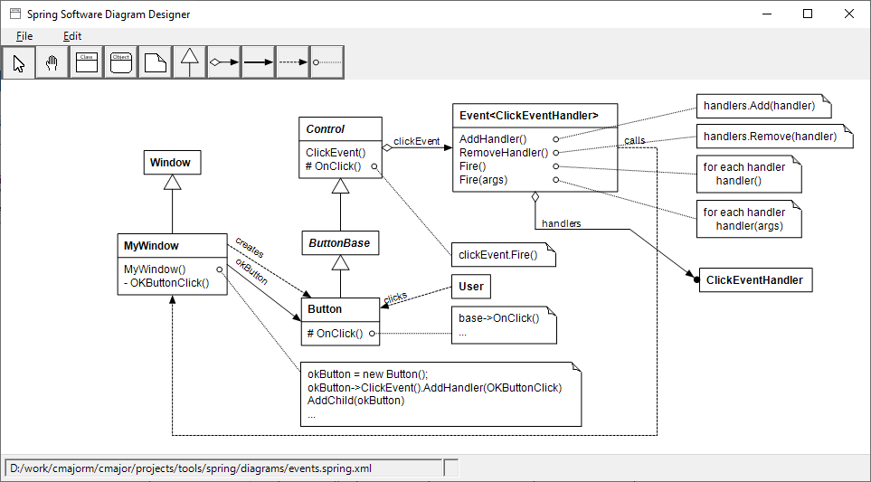

The Spring Software Diagram Designer
Spring is a graphical tool for creating class and object diagrams.
Here's a picture of the main window of spring:

Tools
Spring has ten tools:
- The arrow tool is for selecting diagram elements, moving elements and selections and executing operations on them.
- The hand tool is for setting the visible a part of a large diagram.
- The class tool is for adding a new class to the diagram.
- The object tool is for adding a new object to the diagram.
- The note tool is for adding a pseudocode note to the diagram.
- The inheritance tool is for adding an inheritance relationship between two classes.
- The aggregation tool is for adding an aggregation relationship between two classes.
- The reference tool is for adding a reference relationship between two classes or two objects.
- The create instance tool is for adding a create instance relationship between two classes.
- The attach note tool is for attaching a pseudocode note to an operation of a class.
Selections
The diagram may have two kinds of selections: an "element" selection and a "rectangle" selection.
The element selection consists of individual diagram elements.
You can add and remove elements from the selection by holding the control key down while clicking an element.
A rectangle selection is created by clicking a part of a diagram and holding down the left mouse button while dragging with the mouse.
Operations
By clicking an element or selection with the right mouse button shows a context menu of operations that can applied to that kind of element or elements.
- When an element selection contains multiple classes, objects or notes, you can align them or space them evenly horizontally or vertically.
- The lines of a single relationship element can be straightent.
- Selected elements can be deleted.
- An image consisting of the selected elements can be saved to a file.
- The properties of a single diagram element can be changed.
- Multiple inheritance relationships can be combined to a single one, and a single combined inheritance relationship can be split to distinct relationships.
Reference
The Spring Module document contains reference documentation genererated form the source code.